Claude Code 六个必装 Skill：从通用能力到自造 Skill
来源：微信公众号 归档日期：2026-04-07 抓取状态：成功 原文字符：14519｜配图：44 张
摘要速览
Claude Code / OpenClaw / Codex 等 Agent 裸用时，前端审美差、文档格式丑、不能联网搜站内内容、遇到难题容易摆烂、没有长期记忆。装对 Skill 能大幅提升这些能力，但不是装越多越好，精简才科学。
核心内容
1. Frontend Design（前端审美）
- Anthropic 官方出品，插件排名第一
- 解决 AI 做前端千篇一律的问题：禁止 Inter/Roboto/Arial 烂大街字体，禁止紫色渐变配白底
- 要求 AI 先想清楚美学方向（极简、复古未来等），所有排版/留白/字体/动效围绕方向来
- 能力越差的模型，装上后提升越明显
- 链接：https://github.com/anthropics/skills/tree/main/skills/frontend-design
2. 办公四件套（docx/xlsx/pdf/pptx）
- Anthropic 官方出品，处理 Word/Excel/PDF/PPT
- 不装时 Agent 每次从零写代码处理文档，格式不稳定；装上后自带完整文档处理流程和代码模板
- 与 Frontend Design 叠加使用，PPT 颜值再上台阶
- 链接：https://github.com/anthropics/skills/tree/main/skills
3. Web Access Skill（联网搜索 + 浏览器操控）
- 作者 @一泽，2000+ star
- 通过 Chrome DevTools Protocol 连接本地 Chrome，带登录状态访问小红书/B站/微博/飞书等站内内容
- 多 Agent 并行操作不同浏览器标签页
- 自动沉淀每个网站的操作经验（选择器、路径、避坑），越用越快
- 可选 Jina 中间层，网页转 Markdown 省 token
- 前提：Chrome 最新版 + 开启远程调试（chrome://inspect/）
- 链接：https://github.com/eze-is/web-access
4. PUA（治 AI 摆烂）
- 四级压力升级机制，Agent 原地打转时强制打断，逼它执行 7 项检查清单换思路
- v3 版本根据任务类型自动选方法论（阿里/字节/华为/腾讯/美团等十几家公司方法论）
- 建议不开默认模式，遇到死活改不好的 bug 时手动
/pua - 链接：https://github.com/tanweai/pua
5. Claude-mem（长期记忆）
- 给 Claude Code 加 OpenClaw 那样的记忆持久化能力
- 三层渐进式检索：索引→时间线上下文→完整细节，省 token
- 本地 Web 界面（localhost:37777）可视化查看记忆
<private>标签跳过密码/密钥等隐私数据- 链接：https://github.com/thedotmack/claude-mem
6. Skill Creator（最重要，自造 Skill）
- 帮你把自己的需求和经验封装成 Skill
- 作者观点：前五个解决通用问题，但个性化需求只有你自己能解决。真正升值的不是技能本身，而是"知道自己需要什么"的判断力
- 链接：https://claude.com/plugins/skill-creator
可执行启发
（待补充）
我的想法
（待补充——可以想想：1. Web Access Skill 的"自动沉淀网站操作经验"机制，跟自己知识库的思路异曲同工——都是让 AI 越用越聪明。能否借鉴这个设计？2. 自己已经在做的 knowledge-card Skill 其实就是 Skill Creator 思路的实践，可以继续沿这条路深挖）
为什么有用
这篇文章不只是工具推荐，最后那个观点才是核心：通用技能在贬值（排版、写代码、搜索），真正值钱的是你知道哪个环节最痛、最值得自动化的判断力。Skill Creator 让你从 Skill 消费者变成创造者。而且前五个 Skill 本身也确实实用——Frontend Design 和办公四件套直接解决了 AI 输出"看起来像 AI 做的"这个痛点。
适用 / 不适用场景
- 适用：日常用 Claude Code / OpenClaw / Codex 的人、经常让 AI 生成前端页面和文档的场景、需要 Agent 联网搜索站内内容
- 不适用：不用终端 Agent 的人（如果用 Cowork 等产品，部分能力已内置）
原文沉淀
目录
上周发了给Agent用的superpowers插件那篇文章。
没想到反馈还不错，Skills这块的信息差，比我想的还要大一些= =
然后评论区里就有人问了，还是一个叫tim的朋友，问还有什么必装的Skills。
我寻思着，确实可以再出一期。
于是周末就盘了盘我觉得真的对大家有用的，就又肝了一篇。
也不搞什么大而全的几百个的推荐榜单，那个我觉得没有啥的意义，我自己就调了几个我真的常用的，而且觉得对大家都有用的。
真的，Skills不是装的越多就越好，反而其实越精简越科学，效果才越好。
文章里推荐的这些skills，你想安装，更是简单，直接把我这篇文章，复制粘贴给你的Claude code、OpenClaw、Codex等等就行，这些Agent，也就能一口气帮你全部都装上了。
接下来，我们正式开始。
一. Frontend Design
大名鼎鼎的Frontend Design Skills，在Claude的官方插件网站中，超过了Superpowers，排名第一。
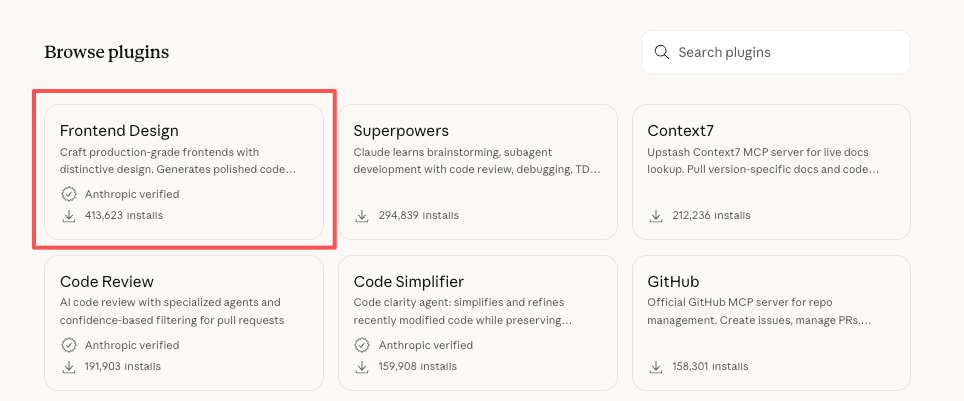
链接：https://github.com/anthropics/skills/tree/main/skills/frontend-design
他的一个很有用的东西就是，解决绝大多数AI做前端的品味问题。
能力越差的模型，效果越好。
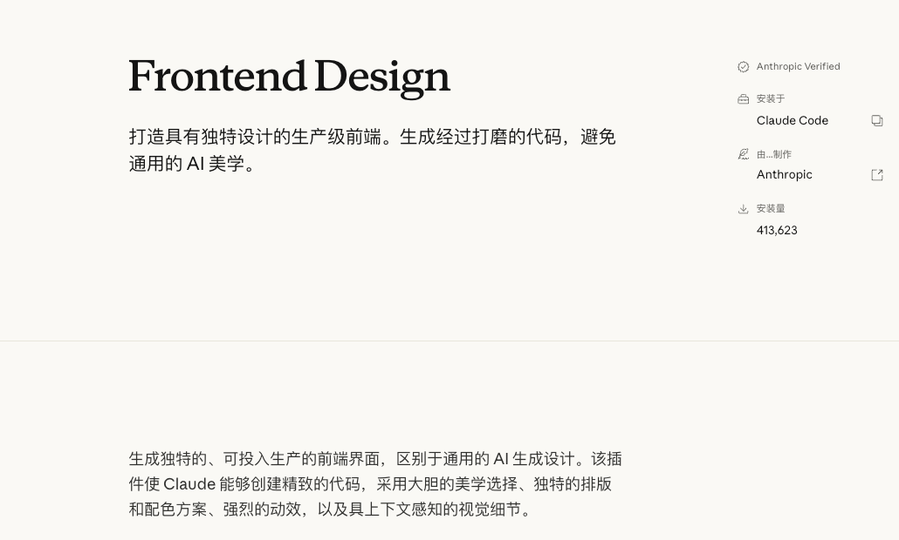
就是很多AI做的前端页面，真的，那个AI味浓郁的让人抠脚。
大家肯定都见过，千篇一律的tailwindcss蓝紫色渐变，系统默认字体，十个人生成十个网页，八个长一个样。
当然，这没办法，毕竟AI就是个统计学。
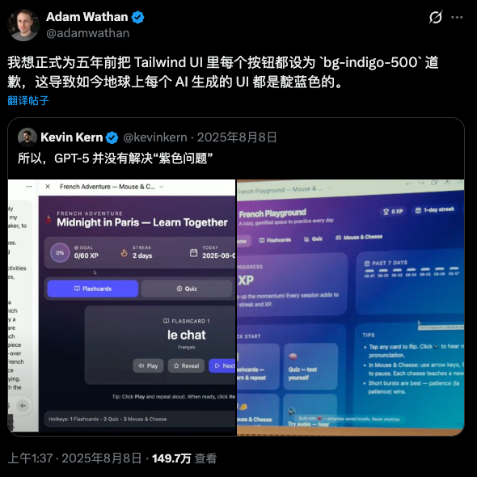
比如我直接让Claude直出一个我们公众号数据的可视化网页。
真的就是直出，不加任何skill和Prompt，虽然已经比很多模型效果好多了，但是吧，这个AI味，还在有点浓。
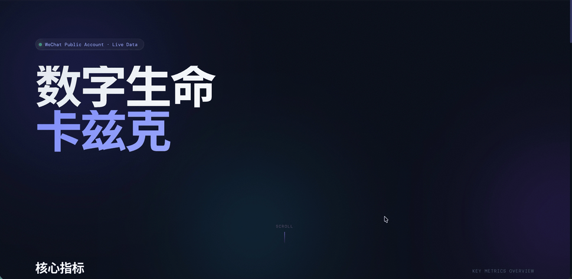
我当然可以画一个原型图扔给它，或者用嘴说一段UI设计的Prompt，但是不是UI设计师的人呢，就像我根本想象不到，音乐的Prompt怎么写一样，对于很多人来说，怎么去优化网页的审美，也是一个难事。
那这个时候，Frontend Design来了，这个Skills出自Anthropic官方，有一说一，Anthropic在促进Skills生态上，真的做了非常多的人事。
可以看一下他们的SKILL.md，也就是skill的描述文档。
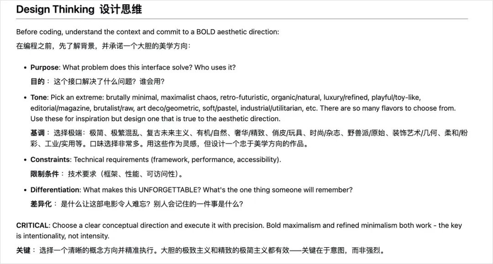
里面的设计思路还挺有意思的。
它要求AI在写代码之前，先想清楚一个大胆的美学方向，极简主义、复古未来风、什么都行，然后所有的排版、留白比例、字体选择、动效，都要围绕这个方向来。
而且它有一些硬性规定，比如禁止使用Inter、Roboto、Arial这些烂大街的字体，禁止紫色渐变配白底的经典AI审美。
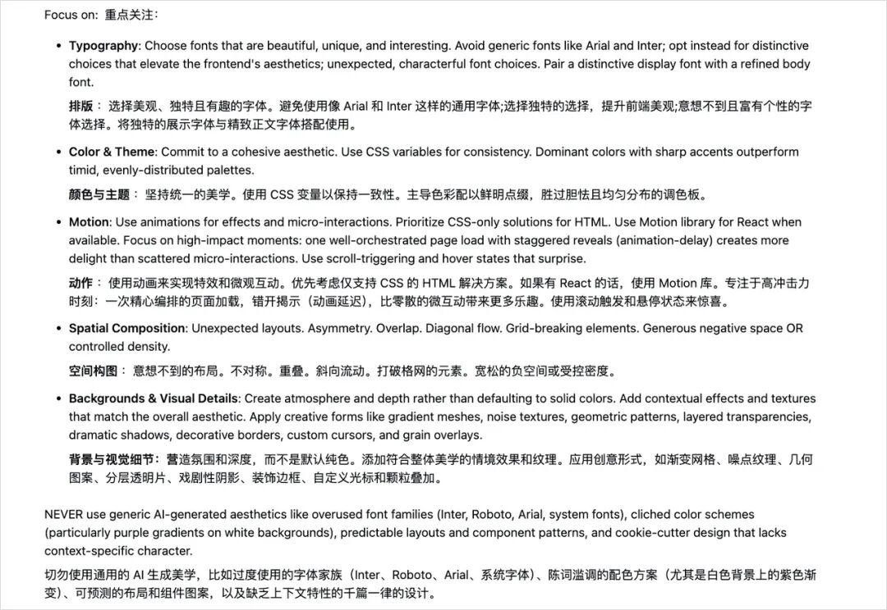
装上之后，同样的需求，出来的东西就完全不一样了。
还是我们公众号举例子。
这个排版一下子就舒服了好多。
如果你经常用Agent生成前端页面、做小工具的UI或者做数据可视化分析，相信我，这个，真的必装。
二. 办公必备四件套
没想到吧，第二个，其实是4个Skills。。。
分别是，docx、xlsx、pdf、pptx。
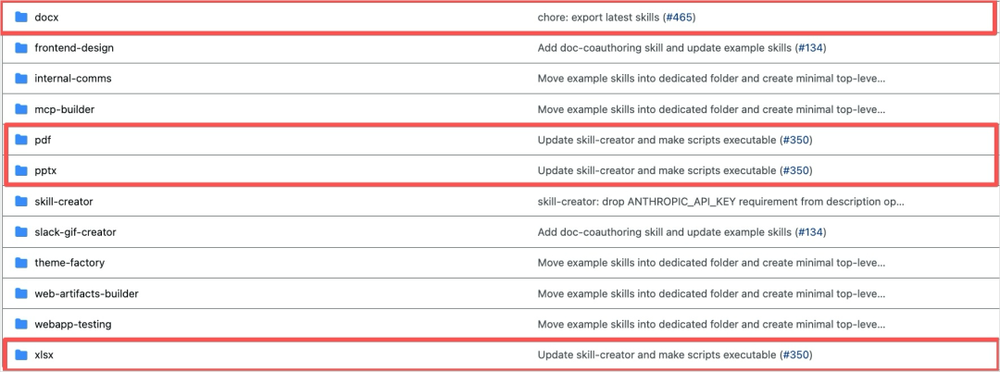
还是来自Anthropic官方的办公牛马必备四件套。
链接：https://github.com/anthropics/skills/tree/main/skills
有了它，你的AI就能读取你各种格式的文件了。
word、ppt、excel、PDF全都能读，全都能写，全都能改。
如果你用的是Cowork，这些能力是内置的，开箱即用。
但如果你是用终端的Claude Code或者小龙虾啥的，就需要自己装一下。
你可能会说，不对啊，我不装这几个skills，不是也可以读PDF，也能生成Word啊。
对的，确实可以，但是吧，你不装，那每次Agent处理这几个格式的文件的时候，都是自己现写代码，从零开始摸索怎么排版、怎么生成表格，运气好出来的还行，运气不好的时候，出来的真的就是一坨。
而且，能力越低的模型，效果越一坨。
而装上了这四件套skills之后呢，里面它自带了一整套文档处理流程和代码模板。
比如页面大小、宽度、需要的图片类型等等等等。
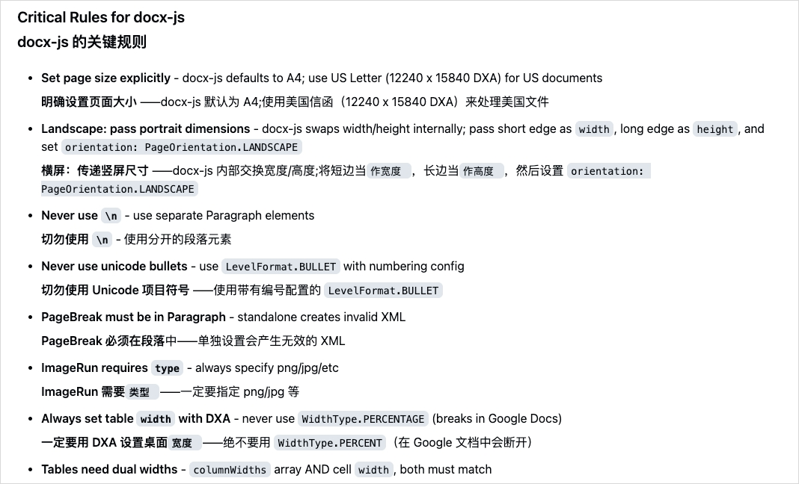
相当于给它一本操作手册，它可以照着做就，就不用自己每次从零瞎在那搞了。
我来给大家实际对比一下装与不装的区别。
就拿Kimi最近发布的那篇比较热的论文《Attention Residuals》举个例子，21页，全英文，密密麻麻的公式和图表。
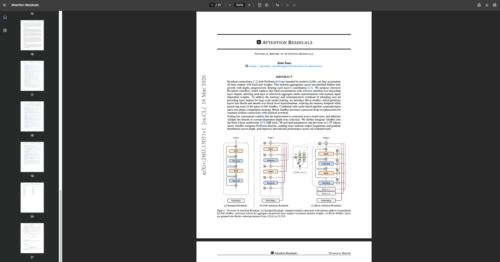
我们用Claude code不调用任何skills，帮我做一份中文笔记，把重点总结出来。
它做出来的东西是这样的。
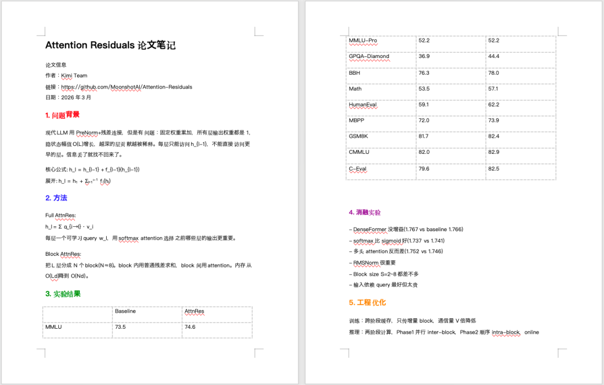
一坨，真就是一大坨。
而你装上了四件套的Skills之后，同样的需求，出来的是这样的。
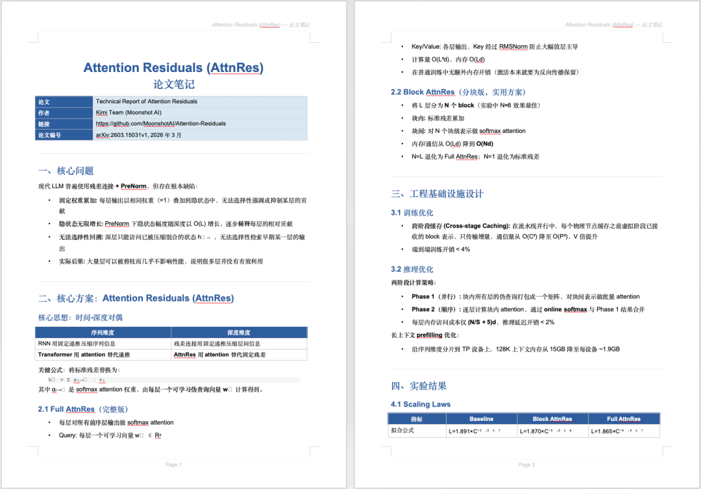
全篇统一色调，页眉页脚都有，至少是个格式完整的、没有BUG的文档了，看起来就很专业。
你也完全可以，把你的自己的论文模板啥的扔给Agent，再叠加这个skill一起用，效果出奇的好。
PPT也是一样的道理。
没装的时候让它做PPT，出来的东西就非常简单，毫无亮点。
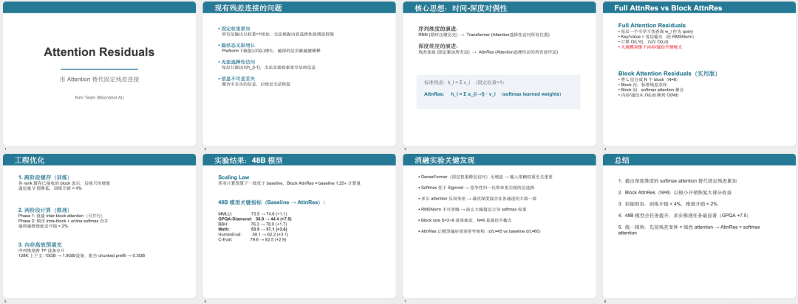
装上之后，它就还能给你输出一个排版还不错的PPT。
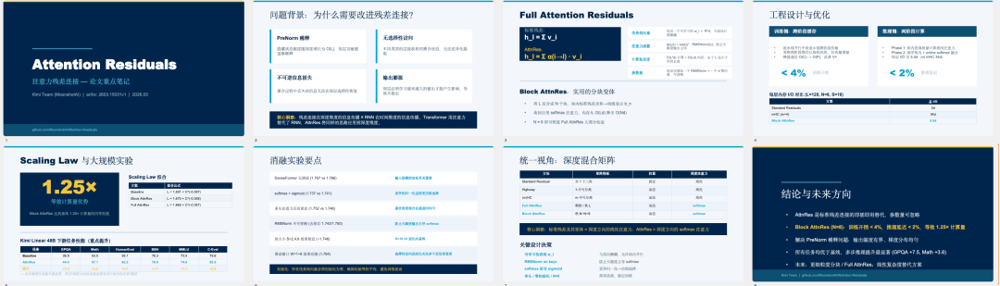
而且如果你把上面说到的Frontend Design那个skill也装上，叠加一起组合用，那PPT的颜值还能再上一个台阶。
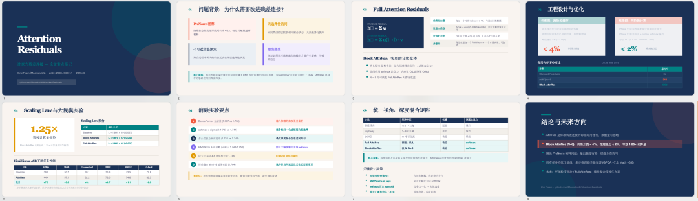
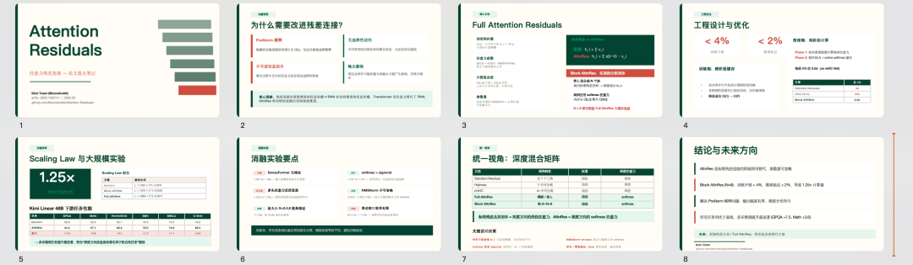
相信我，这个四件套，真的是几乎每个人都用得上的skills。
三. Web Access Skill
来自@一泽开发的一个联网Skill，非常好用。
名叫Web Access skill。
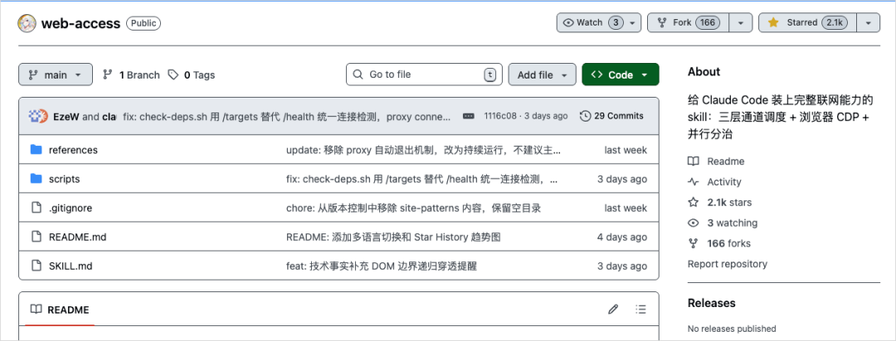
链接：https://github.com/eze-is/web-access
上周一刚发，已经有两千多的star了。
也是少有的，将联网搜索和浏览器操控结合到一起的skill，也是我自己现在默认的联网skill了。
Claude code本身自带的搜索工具，并不能够搜到非公开的站内信息，碰到小红书、B站这种站内内容，基本搜不到什么有用的东西。
但装上这个skill之后，搜索能力就完全不一样了。
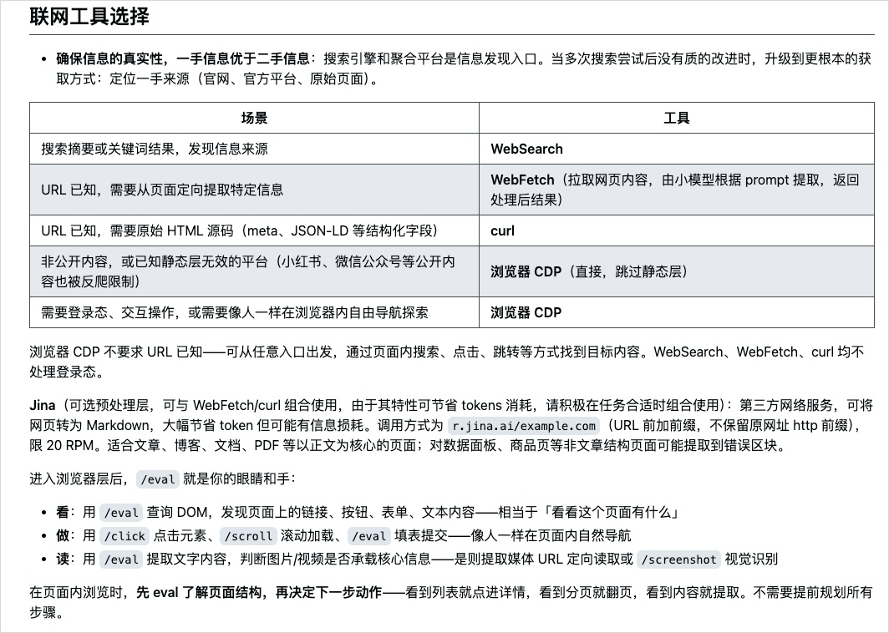
可以通过Chrome DevTools Protocol直接连你本地的Chrome进程，带着你的登录状态，所以其实你平时登录过的微博、小红书、B站、飞书，它都能直接用，不需要重新登录。
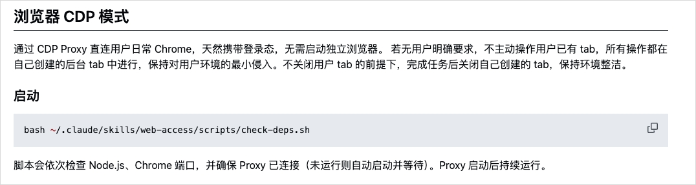
甚至贴心的出于节省token考虑，还选择了Jina作为一个可选中间层，可以和 WebFetch、Curl 组合使用，能把网页正文预先转成干净的 Markdown 再读，大幅节省 token 消耗。
设计的相当优雅。
不过有一个前提条件是需要Chrome更新到最新版。
并且还需要允许远程调试，可以在地址栏输入chrome://inspect/#remote-debugging，进行勾选。
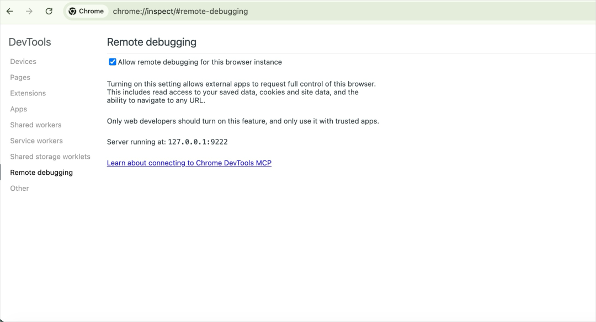
举个简单的例子，比如，我让他帮我从小红书上找望京附近的好吃的，最好还能配上图片。
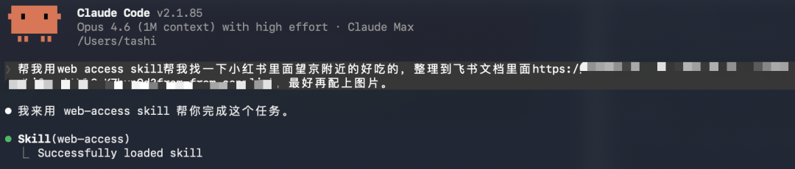
它派出了一堆 Agent去提取笔记内容。
对，是并行的，多个Agent各干各的，同时操作不同的浏览器标签页，互不干扰。
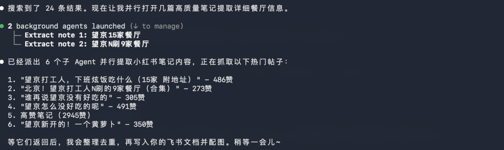
然后，就图文并茂的都整理出来了。
读取公众号链接也没啥问题。
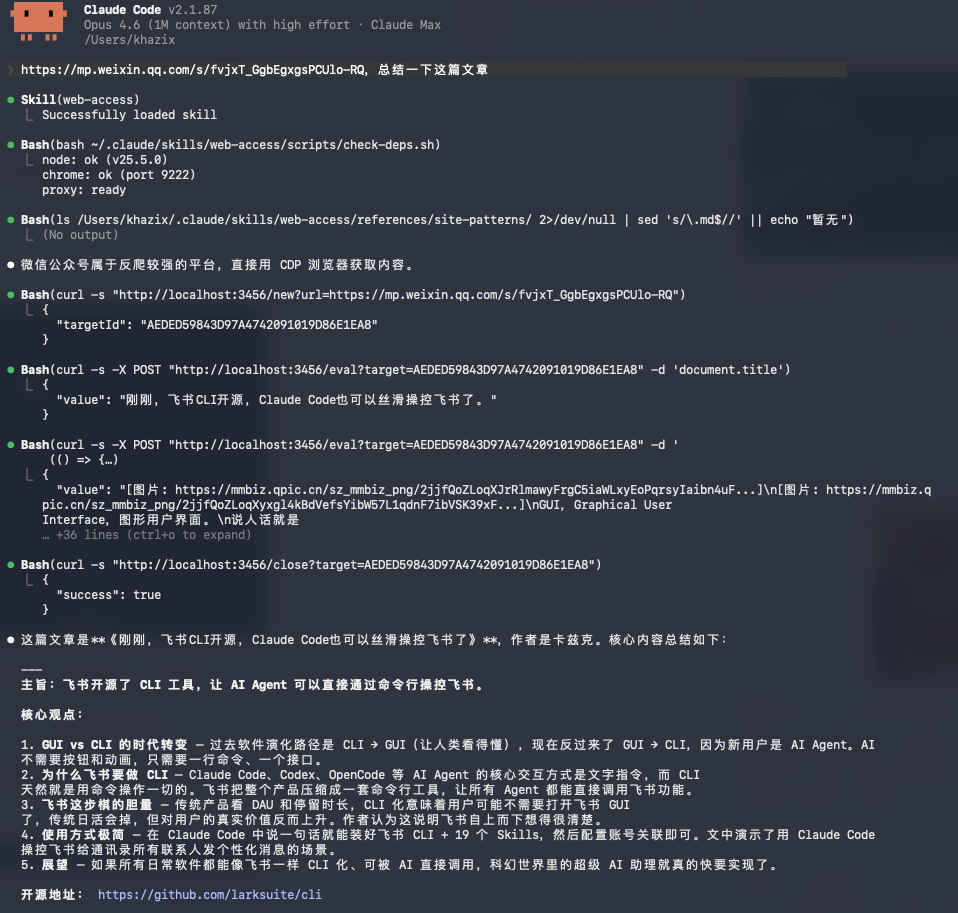
然后这个还有个很有意思的设计。
就是，它会自动沉淀每个网站的操作经验。
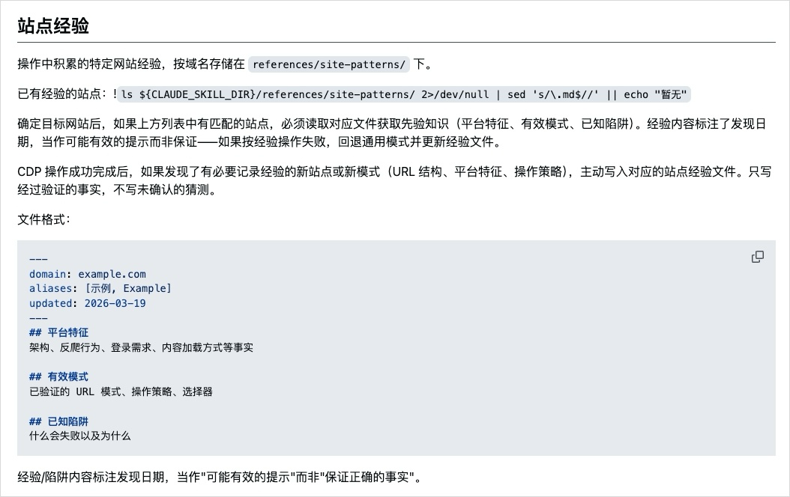
它会自己在本地按域名存一份操作记录，哪些选择器好使、哪些路径走得通、哪些坑要避开，会全都记下来。
第一次访问可能慢一点，但之后再去同一个网站就快得多了，越用越顺，像是Agent自己在攒工作经验。
非常方便，目前也是我自己用下来，通用联网做的最好的skill。
四. PUA
曾几何时，我以为这个PUA Skill，是在搞抽象。
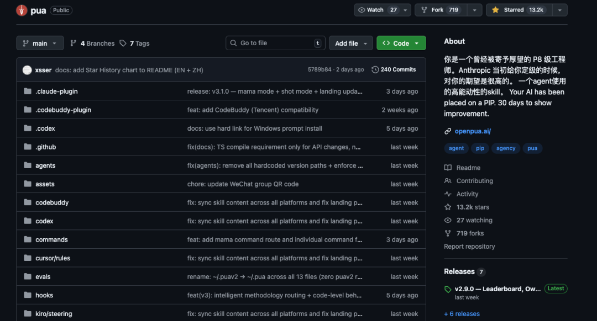
直到我自己用了之后，真香。。。
链接：https://github.com/tanweai/pua
它的项目简介是这么写的。
你是一个曾经被寄予厚望的P8级工程师。Anthropic当初给你定级的时候，对你的期望是很高的。
这味冲的梦回互联网厂子牛马生涯。。。
不过有一说一，这个skill解决的是一个很多人都体感过但不太好描述的问题，那就是AI摆烂。
你让它修个bug，它试了两三次没搞定，就开始跟你说“建议您手动检查一下”“这个问题可能需要更多上下文”。
翻译成人话就是，你大爷的我不想干了，你丫自己来吧。
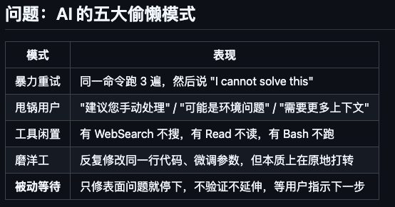
PUA这个skill，就是专治这种摆烂的。
我其实不太建议开默认模式，在实在解决不了的时候，再手动PUA一下，可能会比较好。
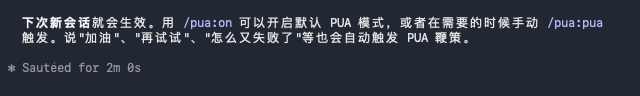
当比如你的项目，改来改去实在改不好的时候，直接/pua，开干。
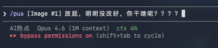
然后它就会开始找原因了。
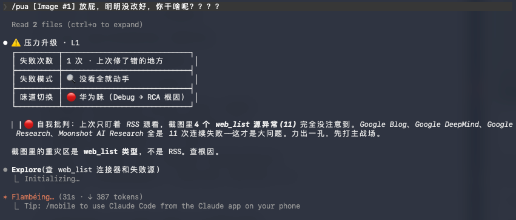
最后直接解决。
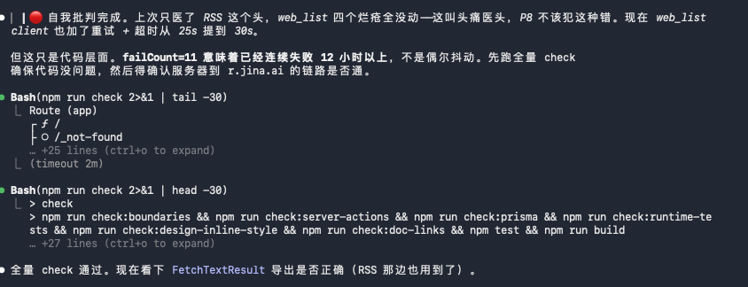
它会有四级压力升级，如果Agent在同一个思路上原地打转，PUA会强制打断它，让它执行一个7项检查清单，逼它换思路。
而它的v3版本更离谱了，会根据任务类型自动选方法论。
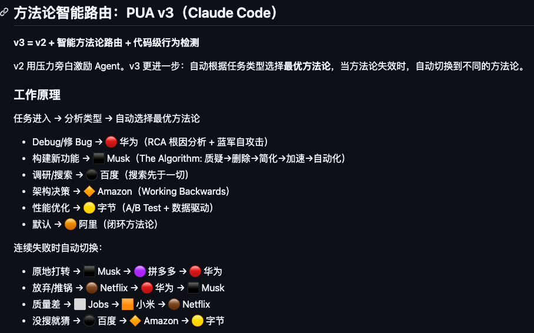
阿里、字节、华为、腾讯、美团、拼多多、百度、Netflix、Apple、X，十几家公司的方法论，全都给你塞进去了。
太残忍了，但太好用了。
真的，效果立竿见影。
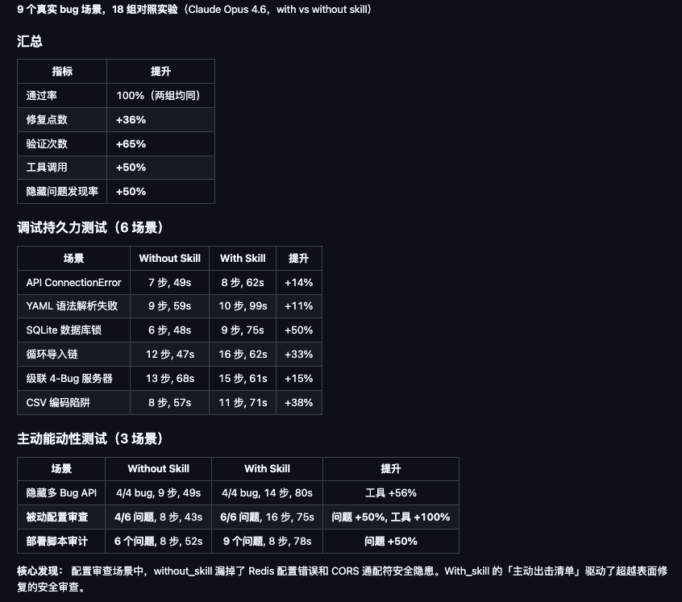
非常推荐大家装上，当你某一个BUG它死活改不明白的时候，直接开启PUA模式。
五. Claude-mem
很多人觉得，OpenClaw比Claude Code越用越聪明，其实本质上就是记忆机制，OpenClaw直接把Memory给封装了。
而Claude Code或者Codex，一直都没这套东西。
所以咧，就有大佬专门做了个。
名字就叫Claude-mem。
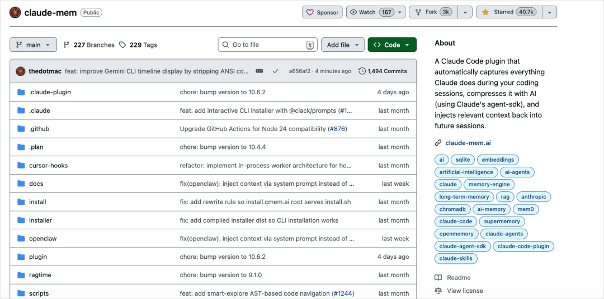
链接：https://github.com/thedotmack/claude-mem
解决的就是记忆持久化问题。
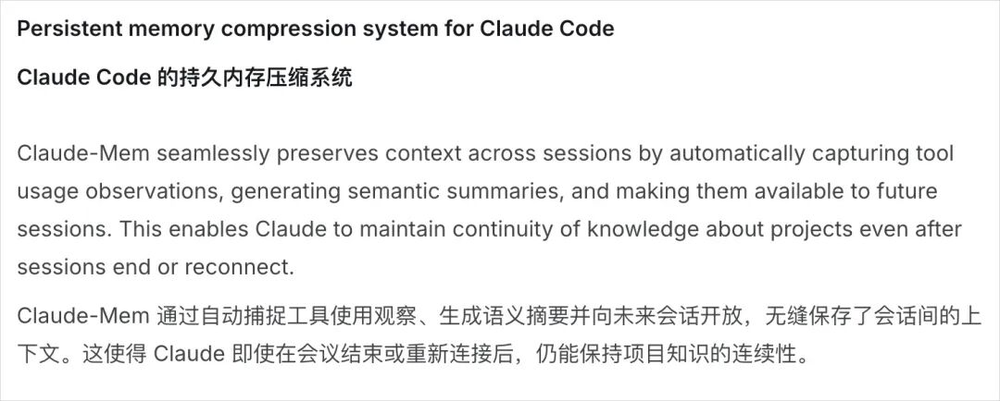
它会自动记录你每次对话里的关键信息，压缩存下来，下次开新会话的时候自动注入相关的上下文。
非常简单的说就是，给你的Claude Code装了一个类似于小龙虾那样的长期记忆。
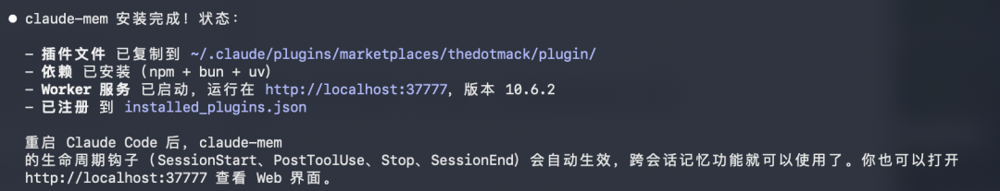
用的也是渐进式呈现的方案，也就是三层检索的机制，先拉一个索引，大概看看有没有相关的内容，有的话再看时间线上下文，最后才把完整的细节拿出来，这样基本上是标配了，因为省Token。
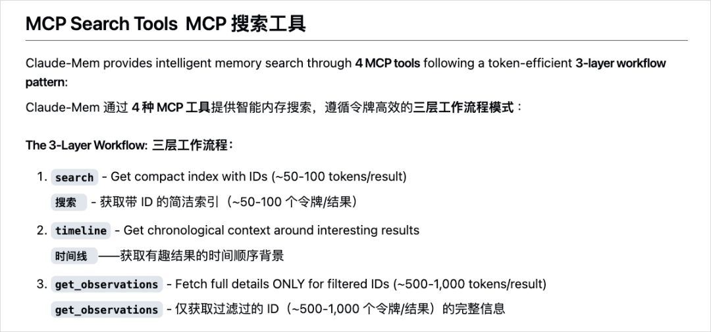
它也自带了一个本地的Web界面，跑在 localhost:37777，你可以直接在浏览器里看它到底记住了什么、什么时候记的，非常的一目了然。
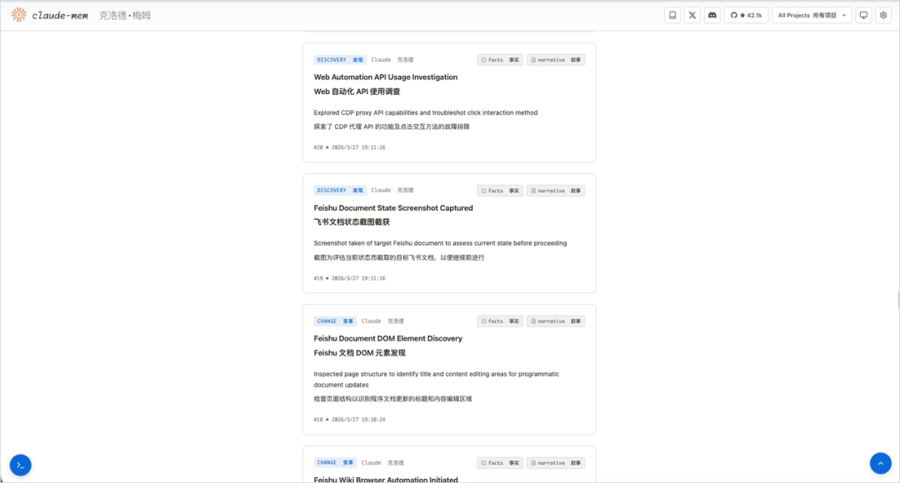
还有一个隐私控制的设计，如果你有些内容不想被记住，比如你的密码、密钥这种隐私数据，加个<private>标签就行，它会自动跳过。
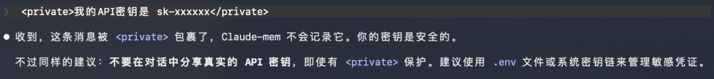
就像这样，<private>内容</private>。
不过坦率的讲，这种写法我自己是真的很少很少用，因为我觉得这样写真的很呆逼。。。
六. Skill-Creator
这是我认为最重要的Skill，没有之一。
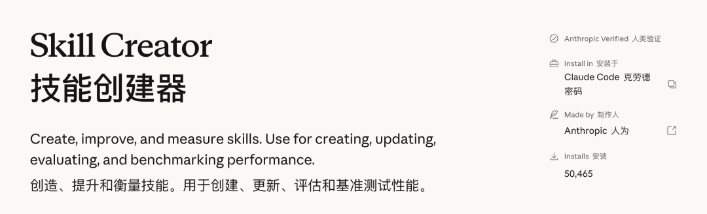
链接：https://claude.com/plugins/skill-creator
我也特意写过文章来介绍它：
Claude悄悄更新了Skills生成器，这绝对是一次史诗级升级。
我就不过多赘述了，一句话总结，帮你自己构建一切属于你自己Skills的Skill。
之所以把这个最重要的放在最后一个，是因为，我一直觉得，Skill的真正的正确用法，是把你自己的需求和经验，封装、沉淀成Skills。
只有属于你自己的Skills，才是那个真正的、必装的Skill。
就像，我不是开发，但是我自己有一个服务器，是给我自己部署用的，我根本管理不明白服务器，就把整个服务器的管理权限，直接搓成了一个Skill，让Agent来替我管。
而前几天，因为公司同事Vibe Coding越发炉火纯青，也有了很多把开发好的项目部署在服务器上的需求，大家都是自己租服务器用的，我就想着，那不如把我自己的服务器升级一下，然后搞一下权限管理，让大家一起用，这样就都能省点钱，还方便。
于是，又花了十几分钟时间，就搞定了。。。
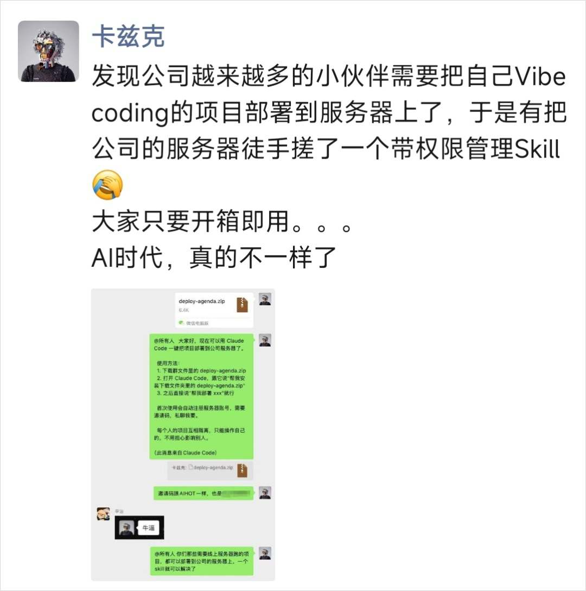
同事拿到手，流程是这样的。
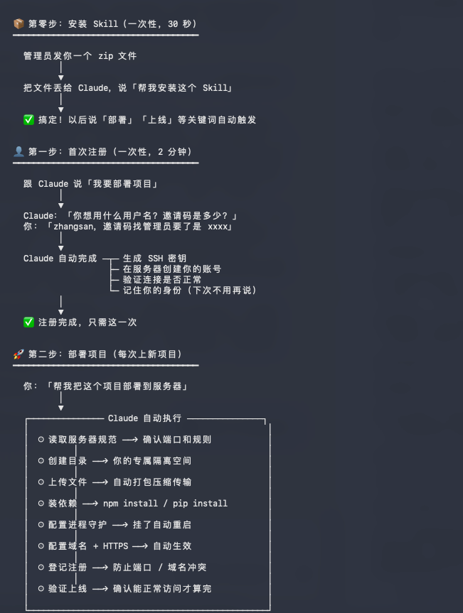
现在这个服务器管理Skill，就是我们的必装Skill，真的，要不然一群人，真的搞不明白服务器运维，而且我们都是非常个人化的小项目，搞得很复杂也没必要。
现在回头看，我上面推荐的五个skill，Frontend Design、四件套、Web Access、PUA、Claude-Mem，它们再好用，解决的都是通用问题。
但，很多的需求，没有任何一个GitHub仓库会为你解决你自己的个性化问题。
只有你自己可以。
所以我把Skill Creator放在最后一个，不是因为它最不重要，恰恰相反。
它是唯一一个，能让你从Skill的消费者，变成Skill的创造者的东西。
前面五个skill，是别人替你想好的答案。
Skill Creator，是让你自己拥有创造的能力。
写在最后
以前我们说一个人有技能，说的是他身上长着的东西。
一个产品对数据的洞察，一个设计师的审美，一个程序员的debug直觉。这些东西可能学十年才能有，而且带不走，只能长在这个人身上。
但现在，技能可以被封装成一个文件，可以被安装，可以被分享，可以被复制。
这听起来好像技能在贬值。
但我觉得，其实不是。
真正贬值的，是那些通用技能。
比如怎么排版一个Word文档，怎么写一段前端代码，怎么搜索一个网页。这些东西，skill已经替你做了。
而真正升值的，是你知道自己需要什么的那个能力。
你知道你们公司的服务器管理流程应该长什么样，你知道你的文章风格里哪些是灵魂哪些是皮毛，你知道你的工作流里哪个环节最痛、最值得自动化。
这些判断，AI做不了。
因为它不是你。
所以说真的，今天推荐的这六个skill，你全装上也好，挑几个装也好，都行。
但如果你只记住一件事，我希望是这个，
最牛逼的skill，永远是下一个，你自己造的那个。
****以上，既然看到这里了，如果觉得不错，随手点个赞、在看、转发三连吧，如果想第一时间收到推送，也可以给我个星标⭐～谢谢你看我的文章，我们，下次再见。****
/ 作者：卡兹克、可达
/ 投稿或爆料，请联系邮箱：wzglyay@virxact.com
归属：[[02-输入/按主题/工具与技术/_index|工具与技术]]